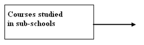

<!-- 원본: GENERAL27/reading (레거시 서버에서 2026-11-14 수집, 정답 제거) -->
<div class="legacy-content"><div id="pageContainer">
<div class="page" id="page-0">
<div class="flex flex-col md:flex-row gap-6">
<div class="w-full md:w-1/2 max-h-[600px] overflow-y-auto">
<h3 class="text-xl font-semibold text-purple-800 mb-4">You are advised to spend 20
                                    minutes on question 1-15.
                                </h3>
<div class="text-gray-700 leading-relaxed">
<div style="width:810px; display:flex; flex-wrap: wrap; justify-content: left;">
<div style="width:350px;">
<div style="width:300px; background-color: skyblue; height:300px;">
<center>
<b style="font-size: 80px;">Why</b><br/><br/>
<b style="font-size: 30px;">MAGAZINE</b>
</center>
</div>
<br/>
<div style="width:300px; background-color:rgb(146, 240, 162); height:700px;">
<center>
<b style="font-size: 30px;">FROM THE EDITOR</b><br/><br/>
<b>
                                                        In this issue we publish some<br/>
                                                        of the many letters we<br/>
                                                        received on the new Sports<br/>
                                                        Stadium, our cover story last<br/>
                                                        month. Your reactions were<br/>
                                                        certainly mixed! Read our<br/>
                                                        exclusive interview with<br/>
                                                        Mike Mikeson and his plans<br/>
                                                        to start a fast-food chain. But<br/>
                                                        there’s so much more ...<br/>
                                                        enough to keep you going<br/>
                                                        for the rest of the month<br/><br/>
                                                        Until next time,
                                                        <br/><br/>
<br/>
<b style="font-size: 30px;">The Editor</b>
</b>
</center>
</div>
</div>
<div style="width:450px;">
                                            COVER STORY     <br/>5<br/>
<b>Mike Mikeson:</b> a new smash-hit movie,<br/>but plans for a dramatic
                                            career change.<br/><br/>
                                            REGULAR FEATURES<br/><br/>
<u>Film Review      30</u><br/>
<u>Crossword      31</u><br/>
<u>Letters to the Editor      32</u><br/>
<u> What’s on Round Town?      33<br/>
                                                Art, Music, Theatre</u><br/>
<br/>
<b style="font-size: 24px;">12   Getaway Holidays</b><br/><br/>
<b style="font-size: 16px;">Some popular and some unusual</b><br/><br/>
<b style="font-size: 24px;">18   Start Now</b><br/><br/>
<b style="font-size: 16px;">Marissa Brown of EastBank sets<br/>out a sound investment and<br/>savings plans for young<br/>professionals</b><br/><br/>
<b style="font-size: 24px;">26   Best Wheels</b><br/><br/>
<b style="font-size: 16px;">Racing car driver Marco Leoni<br/>changes teams: will it be Ford or Ferrari?</b><br/><br/>
<b style="font-size: 24px;">26   The Met</b><br/><br/>
<b style="font-size: 16px;">Metropolitan Art Museum hosts a<br/>new
                                                exhibition of post-modern<br/>paintings</b><br/><br/>
</div>
<b>Read the advertisements for concerts below and answer Questions 5-10 that follow.</b><br/>
</div>
<br/>
<div style="width:800px; border:1px solid #bbb; padding:20px;">
<h1 style="font-size:16px;">
<center>SYDNEY CONSERVATORIUM OF MUSIC</center>
</h1>
<br/>
<h1 style="font-size:32px;">
<center>Concerts for January</center>
</h1>
<br/>
<b>A THE EASTERN YOUTH ORCHESTRA</b><br/>
<p>
                                            Conservatorium High School students play a selection of Mozart
                                            concertos.<br/>
                                            DATE: Sat. 7th and 14th January, 8:00 pm. $10 and $5
                                        </p>
<br/>
<div style="height:10px"></div>
<b>B LET’S SING TOGETHER</b><br/>
<p>
                                            An afternoon for the young and the young-at-heart. Led by the Giggles Band,
                                            sing children’s songs from your childhood and from all over the world.
                                            <br/>
</p><div style="height:5px;"></div>
                                        There will be a special appearance by Willy Wallaby, from the popular
                                        children’s programme. Hoppy!<br/>
                                        DATE: Sun. 8th January, 3:00 pm. $5
                                        <br/>
<div style="height:10px"></div>
<b>C ONE ROMANTIC EVENING</b><br/>
<p>
                                            Bring someone special with you and listen to some of the greatest love songs
                                            as you gaze at the stars together!
                                            <br/>
</p><div style="height:5px;"></div>
                                        DATE Sat. 28th January, 8:00 pm. $20 and $12
                                        <br/>
<div style="height:5px;"></div>
                                        NOTE: This concert will be held in the Conservatorium Rose Garden, not in
                                        the Concert Hall
                                        <br/>
<div style="height:10px"></div>
<b>D ROCK N’ ROLL</b><br/>
<p>
                                            Bop along ‘til late to the rock hits of the last 10 years. Bands playing
                                            include The Hippies, The Hypers, and The Heroes. If you have a special
                                            request, write it down at the ticket counter when you come in.
                                            <br/>
</p><div style="height:5px;"></div>
                                        DATE: Sat. 21st January, 8:00 pm. $10 and $5
                                        <br/>
<div style="height:10px"></div>
<b>E FLAMENCO!</b><br/>
<p>World-famous classical guitarist Rodrigo Paras will play a selection of
                                            traditional Spanish Flamenco pieces.<br/>
</p><div style="height:5px;"></div>
                                        DATE: Sun. 15th and 22nd January, 7:30 pm. $20 and $12
                                    </div>
<br/>
<div style="width:800px; border:1px solid #bbb; padding:20px;">
<p>
                                            Read the information below on treatment for snake bites, then answer
                                            <b>Questions 11-15.</b>
</p>
<br/>
<b>FIRST AID FOR SNAKE BITES</b><br/>
                                        Snakes are not normally aggressive and tend to bite only when they are
                                        threatened or mishandled.<br/>Some snakes, e.g. the carpet snake, are not
                                        poisonous.
                                        Others, e.g. the brown snake, tiger snake and taipan are very poisonous.
                                        <br/><br/>
<b>A</b>    <b>Prevention</b><br/>
<b>✘</b>    leave snakes alone and do not collect snakes<br/>
<b>✘</b>    do not put your hands in hollow logs, under piles of
                                        wood, or in rubbish<br/>
<b>✔</b>    be noisy when walking in the bush<br/>
<b>✔</b>    look carefully when walking through thick
                                        grass<br/>
<b>✔</b>    use a torch around camps at night<br/>
<br/><br/>
<b>B</b>    <b>Symptoms and signs</b><br/>
                                           These do not appear immediately, but from about 15 minutes to
                                        2 hours after the<br/>
                                           person is bitten. There are often no visible symptoms or
                                        signs. Take seriously<br/>
                                           any information from the person concerning:
                                        <br/><br/>
<b>▶</b>    strong emotional reaction<br/>
<b>▶</b>    headache or double vision<br/>
<b>▶</b>    drowsiness, giddiness or faintness<br/>
<b>▶</b>    nausea and/or vomiting and diarrhea<br/>
<b>▶</b>    puncture marks about 1 centimeter apart at the side
                                        of the bite.<br/>
                                           Bites are usually on the limbs, especially the legs.<br/>
<b>▶</b>    reddening<br/>
<b>▶</b>   bruising<br/>
<b>▶</b>   sweating<br/>
<b>▶</b>   breathing difficulties<br/><br/>
<b>C</b>   <b>Management</b><br/>
<b>▶</b>   reassure the person<br/>
<b>▶</b>   apply a pressure immobilisation bandage over the
                                        bitten area and around the limb<br/>
<b>▶</b>   seek medical aid urgently<br/><br/>
<b>D</b>   <b>Snakebite Warnings</b><br/>
<b>▶</b>   never wash the venom off the skin as this will help in
                                        later identification<br/>
<b>▶</b>   never cut or squeeze the bitten area<br/>
<b>▶</b>   never try to suck the venom out of the wound
                                    </div>
</div>
</div>
<div class="w-full md:w-1/2 max-h-[600px] overflow-y-auto">
<div class="question mb-6">
<div>
<h2 style="font-size:24px;"><b>SECTION 1 QUESTIONS 1-15</b></h2><br/>
<h2 style="font-size:22px;"><b>Questions 1-4</b></h2>
<br/>
<p>
                                            On the following page is a contents page from a magazine. Answer
                                            <b>Questions
                                                1-3</b> by writing the appropriate page number or numbers where the
                                            information
                                            appears in the magazine, in <b>boxes 1-3</b> on your answer sheet.
                                        </p>
</div>
<br/>
<div>
                                        Example     On what page is the main article in the
                                        magazine?   <b>5</b><br/><br/>
<b>1.</b>  What page would you turn to for advice about money? <input autocomplete="off" class="border border-purple-300 rounded px-3 py-2 w-full bg-white text-gray-800" name="q1" placeholder="(1)" style="width:150px; border:0; border-bottom:1px solid #000; text-align:center;" type="text"/><br/>
<div style="height:5px;"></div>
<b>2.</b>  On what TWO pages can you read about art? <input autocomplete="off" class="border border-purple-300 rounded px-3 py-2 w-full bg-white text-gray-800" name="q2" placeholder="(2)" style="width:150px; border:0; border-bottom:1px solid #000; text-align:center;" type="text"/><br/>
<div style="height:5px;"></div>
<b>3.</b>  On what page is the new sports stadium discussed? <input autocomplete="off" class="border border-purple-300 rounded px-3 py-2 w-full bg-white text-gray-800" name="q3" placeholder="(3)" style="width:150px; border:0; border-bottom:1px solid #000; text-align:center;" type="text"/><br/>
<div style="height:5px;"></div>
</div>
</div>
<div class="question mb-6">
<div>
<h2 style="font-size:22px;"><b>Questions 4</b></h2>
<br/>
<p>
                                            Answer <b>Question 4</b> by writing <b>NO MORE THAN THREE WORDS</b> in box 4
                                            on your
                                            answer sheet.
                                        </p>
</div>
<br/>
<div>
<b>4.</b> How often does this magazine appear? <input autocomplete="off" class="border border-purple-300 rounded px-3 py-2 w-full bg-white text-gray-800" name="q4" placeholder="(4)" style="width:150px; border:0; border-bottom:1px solid #000; text-align:center;" type="text"/><br/>
<div style="height:5px;"></div>
</div>
</div>
<div class="question mb-6">
<div>
<h2 style="font-size:22px;"><b>Questions 5-10</b></h2>
<br/>
<p>
                                            Answer <b>Questions 5-10</b> below by writing the appropriate letter or
                                            letters <b>A-E</b>
                                            in <b>boxes 5-10</b> on your answer sheet. Your answer may require more than
                                            one
                                            letter.
                                        </p>
</div>
<br/>
<div>
                                        Example     At which concert will a television
                                        character appear?   <b>B</b><br/><br/>
</div>
<b>5.</b>  At which concert will young performers play? <input autocomplete="off" class="border border-purple-300 rounded px-3 py-2 w-full bg-white text-gray-800" name="q5" placeholder="(5)" style="width:150px; border:0; border-bottom:1px solid #000; text-align:center;" type="text"/><br/>
<div style="height:5px;"></div>
<b>6.</b>  Which concert will be held outdoors? <input autocomplete="off" class="border border-purple-300 rounded px-3 py-2 w-full bg-white text-gray-800" name="q6" placeholder="(6)" style="width:150px; border:0; border-bottom:1px solid #000; text-align:center;" type="text"/><br/>
<div style="height:5px;"></div>
<b>7.</b>  Which concerts will happen more than once? <input autocomplete="off" class="border border-purple-300 rounded px-3 py-2 w-full bg-white text-gray-800" name="q7" placeholder="(7)" style="width:150px; border:0; border-bottom:1px solid #000; text-align:center;" type="text"/><br/>
<div style="height:5px;"></div>
<b>8.</b>  Which concert will feature only one performer? <input autocomplete="off" class="border border-purple-300 rounded px-3 py-2 w-full bg-white text-gray-800" name="q8" placeholder="(8)" style="width:150px; border:0; border-bottom:1px solid #000; text-align:center;" type="text"/><br/>
<div style="height:5px;"></div>
<b>9.</b>  Which concert is NOT being held at night? <input autocomplete="off" class="border border-purple-300 rounded px-3 py-2 w-full bg-white text-gray-800" name="q9" placeholder="(9)" style="width:150px; border:0; border-bottom:1px solid #000; text-align:center;" type="text"/><br/>
<div style="height:5px;"></div>
<b>10.</b>  At which concert can audience choose what will be
                                    performed? <input autocomplete="off" class="border border-purple-300 rounded px-3 py-2 w-full bg-white text-gray-800" name="q10" placeholder="(10)" style="width:150px; border:0; border-bottom:1px solid #000; text-align:center;" type="text"/><br/>
<div style="height:5px;"></div>
</div>
<div class="question mb-6">
<div>
<h2 style="font-size:22px;"><b>Questions 11-15</b></h2>
<br/>
</div>
<br/>
                                        The passage “First Aid for Snake Bites” explains what to do in the event of a
                                        snake bite. Read the statements below and choose the section <b>A-D</b> to which
                                        each
                                        statement belongs. Write the appropriate letter in <b>boxes 11-15</b> on your
                                        answer
                                        sheet.<br/><br/>
                                        Example     <b>never use a tight
                                            bandage   D</b>
<div>
<b>11.</b>   help the person to sit or lie down <input autocomplete="off" class="border border-purple-300 rounded px-3 py-2 w-full bg-white text-gray-800" name="q11" placeholder="(11)" style="width:150px; border:0; border-bottom:1px solid #000; text-align:center;" type="text"/><br/>
<div style="height:5px;"></div>
<b>12.</b>   wear stout shoes, walk socks and jeans (or similar clothing)
                                        in areas where snakes could be present <input autocomplete="off" class="border border-purple-300 rounded px-3 py-2 w-full bg-white text-gray-800" name="q12" placeholder="(12)" style="width:150px; border:0; border-bottom:1px solid #000; text-align:center;" type="text"/><br/>
<div style="height:5px;"></div>
<b>13.</b>   pain or tightness in the chest or abdomen <input autocomplete="off" class="border border-purple-300 rounded px-3 py-2 w-full bg-white text-gray-800" name="q13" placeholder="(13)" style="width:150px; border:0; border-bottom:1px solid #000; text-align:center;" type="text"/><br/>
<div style="height:5px;"></div>
<b>14.</b>   do not try to catch the snake <input autocomplete="off" class="border border-purple-300 rounded px-3 py-2 w-full bg-white text-gray-800" name="q14" placeholder="(14)" style="width:150px; border:0; border-bottom:1px solid #000; text-align:center;" type="text"/><br/>
<div style="height:5px;"></div>
<b>15.</b>   swelling of the bitten area <input autocomplete="off" class="border border-purple-300 rounded px-3 py-2 w-full bg-white text-gray-800" name="q15" placeholder="(15)" style="width:150px; border:0; border-bottom:1px solid #000; text-align:center;" type="text"/><br/>
<div style="height:5px;"></div>
</div>
</div>
</div>
</div>
</div>
<div class="page" id="page-1">
<div class="flex flex-col md:flex-row gap-6">
<div "="" class="w-full md:w-1/2 max-h-[600px] overflow-y-auto">
<h3 class="text-xl font-semibold text-purple-800 mb-4">Passage 2: You are advised
                                to
                                spend 20 minutes on questions 16-25.</h3>
<div class="text-gray-700 leading-relaxed">
<div style="width:800px; border:1px solid #bbb; padding:20px;">
<h1 style="font-size:20px;">
<center>STUDENT ACCOMMODATION<br/>
                                                AT <b>NORTHSIDE UNIVERSITY</b>
</center>
</h1>
<br/>
<p>Situated about 20km from the city centre. Northside University is not easy to
                                            get
                                            to by public transport. However, students have several different
                                            alternatives
                                            for accommodation on or near the University campus.</p>
<br/>
<div style="height:10px"></div>
<p>Firstly, the University has several residential colleges; Burnside College,
                                            Boronia College and Helen Turner College. Each of these colleges provides a
                                            single fully furnished room with shared bathroom facilities, and meals.
                                            Burnside
                                            College is the most expensive, with 2006 fees ranging from $154-$165 per
                                            week.
                                            However, each student room is equipped with a private telephone and
                                            voice-mailing facilities, and within the next few months college students
                                            will
                                            have access to E-MAIL, On-Line library, INTERNET and AARNET via a network
                                            with
                                            the University. Boronia College has similar room facilities but does not
                                            offer
                                            the same computer access. It also offers only 17 meals per week, compared to
                                            Burnside’s 21. Fees vary from $147-$157 per week. Helen Turner College is a
                                            college exclusively for women, with similar fees to Boronia College. To
                                            attend
                                            classes, students have a short walk from the residential college to the main
                                            University Campus.</p>
<br/>
<div style="height:10px"></div>
<p>The University also provides 23 self-contained furnished townhouses. These
                                            townhouses have either 3, 4 or 6 bedrooms each and student residents are
                                            expected to be studying full-time. Rents in 2000 ranged from $54 per week
                                            for a
                                            room in a six bedroom flat to $68.50 per week for a room in a three-bedroom
                                            house. Students wanting to live in university housing should apply to the
                                            university housing officer in August of the previous year, as it is in high
                                            demand. Smoking is banned in University housing.</p>
<br/>
<div style="height:10px"></div>
<p>Off campus, there are many flats, town houses and houses for rent in the
                                            local
                                            area. These can be found by looking in the local newspaper under
                                            ACCOMMODATION,
                                            or by checking notices pinned up on the boards around the university. There
                                            are
                                            always students advertising for housemates and you can even add a notice of
                                            your
                                            own to the board. However, even sharing accommodation with others can be
                                            expensive; tenants are usually required to pay a rental bond, rent in
                                            advance,
                                            and telephone/electricity/gas bills in addition to food bills. Be sure that
                                            you
                                            know what you will be required to pay before you enter into any written
                                            agreement.</p>
<br/>
<div style="height:10px"></div>
</div>
</div>
</div>
<div class="w-full md:w-1/2 max-h-[600px] overflow-y-auto">
<p>Read the information about
                                    starting a new job below and answer questions 16-26.</p>
<div class="question mb-6">
<div>
<h2 style="font-size:24px;"><b>SECTION 2 QUESTIONS 14-25</b></h2>
<h2 style="font-size:22px;"><b>Questions 16-19</b></h2>
<br/>
<p>
                                            Choose the appropriate letter A-C and write it in <b>boxes 16-19</b> on your
                                            answer
                                            sheet.
                                        </p>
</div>
<br/>
<div>
<b id="question-16">16</b>   The University Residential Colleges
                                        provide<br/>
<div class="space-y-2 ml-6">
<label><input autocomplete="off" class="mr-2 w-4 h-4 accent-purple-600" name="q16" type="radio" value="A"/><b>A</b>   a
                                                place to live and regular classes</label><br/>
<label><input autocomplete="off" class="mr-2 w-4 h-4 accent-purple-600" name="q16" type="radio" value="B"/><b>B</b>   regular
                                                classes only</label><br/>
<label><input autocomplete="off" class="mr-2 w-4 h-4 accent-purple-600" name="q16" type="radio" value="C"/><b>C</b>   a
                                                place to live only.</label>
</div>
<br/>
<b id="question-17">17</b>   Smoking is<br/>
<div class="space-y-2 ml-6">
<label><input autocomplete="off" class="mr-2 w-4 h-4 accent-purple-600" name="q17" type="radio" value="A"/><b>A</b>   allowed
                                                in University housing</label><br/>
<label><input autocomplete="off" class="mr-2 w-4 h-4 accent-purple-600" name="q17" type="radio" value="B"/><b>B</b>   not
                                                allowed in University housing</label><br/>
<label><input autocomplete="off" class="mr-2 w-4 h-4 accent-purple-600" name="q17" type="radio" value="C"/><b>C</b>   allowed
                                                only in certain areas in University housing.</label>
</div>
<br/>
<b id="question-18">18</b>   University town houses are available
                                        for<br/>
<div class="space-y-2 ml-6">
<label><input autocomplete="off" class="mr-2 w-4 h-4 accent-purple-600" name="q18" type="radio" value="A"/><b>A</b>   full-time
                                                students only</label><br/>
<label><input autocomplete="off" class="mr-2 w-4 h-4 accent-purple-600" name="q18" type="radio" value="B"/><b>B</b>   part-time
                                                students only</label><br/>
<label><input autocomplete="off" class="mr-2 w-4 h-4 accent-purple-600" name="q18" type="radio" value="C"/><b>C</b>   all
                                                students.</label>
</div>
<br/>
<b id="question-19">19</b>   Accommodation in the area surrounding the
                                        university is<br/>
<div class="space-y-2 ml-6">
<label><input autocomplete="off" class="mr-2 w-4 h-4 accent-purple-600" name="q19" type="radio" value="A"/><b>A</b>   scarce</label><br/>
<label><input autocomplete="off" class="mr-2 w-4 h-4 accent-purple-600" name="q19" type="radio" value="B"/><b>B</b>   plentiful</label><br/>
<label><input autocomplete="off" class="mr-2 w-4 h-4 accent-purple-600" name="q19" type="radio" value="C"/><b>C</b>   scarce
                                                and expensive.</label>
</div>
</div>
</div>
<div class="question mb-6">
<div>
<h2 style="font-size:22px;"><b>Questions 20-25</b></h2>
<br/>
<p>
                                            Complete the following sentences with information from the passage. Write
                                            your
                                            answers in <b>boxes 20-25</b><br/> on your answer sheet.
                                        </p>
</div>
<br/>
<div>
                                        A student living in a 3-bedroom University town house would pay  <input autocomplete="off" class="border border-purple-300 rounded px-3 py-2 w-full bg-white text-gray-800" name="q20" placeholder="(20)" style="width:150px; border:0; border-bottom:1px solid #000; text-align:center;" type="text"/>
                                        per week
                                        for a room; in comparison, the cheapest accommodation available at Burnside
                                        College
                                        is  <input autocomplete="off" class="border border-purple-300 rounded px-3 py-2 w-full bg-white text-gray-800" name="q21" placeholder="(21)" style="width:150px; border:0; border-bottom:1px solid #000; text-align:center;" type="text"/>
                                        per week. The fee charged at Burnside College includes  <input autocomplete="off" class="border border-purple-300 rounded px-3 py-2 w-full bg-white text-gray-800" name="q22" placeholder="(22)" style="width:150px; border:0; border-bottom:1px solid #000; text-align:center;" type="text"/>
                                        meals
                                        per week, but at Boronia College only  <input autocomplete="off" class="border border-purple-300 rounded px-3 py-2 w-full bg-white text-gray-800" name="q23" placeholder="(23)" style="width:150px; border:0; border-bottom:1px solid #000; text-align:center;" type="text"/>
                                        meals per week are included in the
                                        fee. Helen Turner College has a similar fee structure to  <input autocomplete="off" class="border border-purple-300 rounded px-3 py-2 w-full bg-white text-gray-800" name="q24" placeholder="(24)" style="width:150px; border:0; border-bottom:1px solid #000; text-align:center;" type="text"/>
                                        College but only
                                         <input autocomplete="off" class="border border-purple-300 rounded px-3 py-2 w-full bg-white text-gray-800" name="q25" placeholder="(25)" style="width:150px; border:0; border-bottom:1px solid #000; text-align:center;" type="text"/>
                                        may live there.
                                    </div>
</div>
</div>
</div>
</div>
<div class="page" id="page-2">
<div class="flex flex-col md:flex-row gap-6">
<div class="w-full md:w-1/2 max-h-[600px] overflow-y-auto">
<h3 class="text-xl font-semibold text-purple-800 mb-4">Passage 3: You are advised to
                                    spend
                                    20 minutes on questions 26-40.
                                </h3>
<div class="text-gray-700 leading-relaxed">
<div style="width:800px; border:1px solid #bbb; padding:20px;">
                                        KORMILDA COLLEGE
                                        <br/><br/>
<b>Section A</b><br/>
<p>Kormilda College is a unique school situated near Darwin in Australia’s
                                            Northern
                                            Territory. For 20 years, to 1989, Kormilda College operated as a
                                            government-run,
                                            live in school for high school Aboriginal students. In 1989 it was bought
                                            from the
                                            Government by two Christian church groups and since then it has expanded
                                            enormously,
                                            to include a day school as well as boarders (residential students) in Year
                                            8-12.
                                            Although 320 pupils of the College’s total number are Aboriginal students,
                                            drawn
                                            mainly from isolated communities across the Northern Territory, Kormilda
                                            also has a
                                            waiting list of non-Aboriginal students. With a current enrolment of 600,
                                            student
                                            numbers are expected to grow to 860 by 2005.</p>
<br/>
<div style="height:10px"></div>
<b>Section B</b><br/>
<p>Central to the mission of the school is the encouragement of individual
                                            excellence,
                                            which has resulted in programs designed especially for the student
                                            population.
                                            Specialist support programs allow traditional Aboriginal students, who are
                                            often
                                            second language users, to understand and succeed in the mainstream
                                            curriculum. A
                                            Gifted and Talented Program, including a special Aboriginal and Torres
                                            Strait
                                            Islander Tertiary Aspirations program, has been introduced, as has an
                                            Adaptive
                                            Education Unit. Moreover, in Years 11 and 12, students may choose to follow
                                            the
                                            standard Northern Territory Courses, or those of the International
                                            Baccalaureate
                                            (I.B.).</p>
<br/>
<div style="height:10px"></div>
<b>Section C</b><br/>
<p>To provide appropriate pastoral care, as a well as suitable academic
                                            structure, three
                                            distinct sub-schools have been established.</p><br/>
     Pre-Secondary: For
                                        Aboriginal
                                        and Torres Strait Islander students in Year 8-10 who are of secondary school age
                                        but
                                        have difficulties reading and writing.<br/>
     Supported Secondary: For
                                        Aboriginal and Torres Strait Islander students who are secondary school age and
                                        operating at secondary school year levels 8-12 who need specific second language
                                        literacy and numeracy support.<br/>
     Secondary: For
                                        multi-cultural
                                        Years 8-12 students.<br/>
                                        Students remain in their sub-schools for classes in the main subject areas of
                                        English,
                                        Mathematics, Social Education and Science. This arrangement takes into account
                                        both
                                        diverse levels of literacy and the styles of learning and cultural
                                        understandings
                                        appropriate to traditional Aboriginal second-language users. In elective
                                        subjects chosen
                                        by the students–which include Indonesian, Music, Art, Drama, Science for Life,
                                        Commerce,
                                        Geography, Modern History, Woodwork, Metalwork, Economics and Legal
                                        studies–students mix
                                        on the basis of subject interest.
                                        <br/>
<div style="height:10px"></div>
<b>Section D</b><br/>
<p>
                                            To aid the development of the Aboriginal Education program, a specialist
                                            curriculum
                                            Support Unit ha been set up. One of its functions is to re-package school
                                            courses so
                                            that they can be taught in ways that suit the students.<br/>
</p><div style="height:5px;"></div>
                                        The education program offered to Aboriginal students uses an approach which
                                        begins
                                        with the students’ own experiences and gradually builds bi-cultural
                                        understanding.
                                        In one course, “Introducing Western European Culture Through Traditional
                                        Story-Telling”, students are helped to build a common base for approaching the
                                        English literature curriculum. Drawing on the oral culture of traditional
                                        Aboriginal
                                        communities, they are introduced to traditional stories of other culture, both
                                        oral
                                        and written. In a foundational Year 10 course, “Theory of Learning”, concepts
                                        from
                                        Aboriginal culture are placed side by side with European concepts so that
                                        students
                                        can use their own knowledge base to help bridge the culture divide.<br/>
<div style="height:5px;"></div>
                                        Another project of the Support Unit has been the publication of several books,
                                        the
                                        most popular, <b>Kormilda Capers.</b> The idea for <b>Kormilda Capers</b> came
                                        about
                                        when it
                                        became obvious that there was a lack of engaging material for the school’s
                                        teenage
                                        readers. One of the stories in the book, “The Bulman Mob hits the Big Smoke”,
                                        recounts the adventures of Kormilda pupils on their first visit to Sydney,
                                        Canberra
                                        and the snow country. Focusing on experiences which have directly affected the
                                        lives
                                        of students at the College, and on the ideas and issues which are of immediate
                                        interest to Aboriginal students, <b>Kormilda Capers</b> has earned enthusiastic
                                        support
                                        within and outside the school.
                                    </div>
</div>
</div>
<div class="w-full md:w-1/2 max-h-[600px] overflow-y-auto">
<p>Read the text below and answer questions 26-40.</p><br/>
<div class="question mb-6">
<div>
<h2 style="font-size:24px;"><b>SECTION 3 QUESTIONS 26-40</b></h2><br/>
<h2 style="font-size:22px;"><b>Questions 26-27</b></h2>
<br/>
<p>
                                            Complete the following sentences with <b>A NUMBER OR DATE</b> from the
                                            passage.
                                            Write your
                                            answers in <b>boxes 26-27</b> on your answer sheet.
                                        </p>
</div>
<br/>
<div>
<b>26.</b>  Kormilda College opened as a school in  <input autocomplete="off" class="border border-purple-300 rounded px-3 py-2 w-full bg-white text-gray-800" name="q26" placeholder="(26)" style="width:150px; border:0; border-bottom:1px solid #000; text-align:center;" type="text"/><br/>
<b>27.</b>  At time of writing there were <input autocomplete="off" class="border border-purple-300 rounded px-3 py-2 w-full bg-white text-gray-800" name="q27" placeholder="(27)" style="width:150px; border:0; border-bottom:1px solid #000; text-align:center;" type="text"/> 
                                        non-Aboriginal students at Kormilda
                                        College.
                                    </div>
</div>
<div class="question mb-6">
<div>
<h2 style="font-size:22px;"><b>Questions 28</b></h2>
<br/>
<p>
                                            From the list below, choose the best heading for Section B of the reading
                                            passage.
                                            Write the appropriate letter <b>A-D</b> in <b>box 28</b> on your answer
                                            sheet.
                                        </p>
</div>
<br/>
<div>
<b>28.</b>  <input autocomplete="off" class="border border-purple-300 rounded px-3 py-2 w-full bg-white text-gray-800" name="q28" placeholder="(28)" style="width:150px; border:0; border-bottom:1px solid #000; text-align:center;" type="text"/><br/>
<div style="height:5px;"></div>
<b>A.</b> Specialist teaching and teachers at Kormilda College<br/>
<b>B.</b> Special Programs at Kormilda College for Aboriginal students<br/>
<b>C.</b> The new look Kormilda College<br/>
<b>D.</b> Programs at Kormilda College promote individual excellence
                                    </div>
</div>
<div class="question mb-6">
<div>
<h2 style="font-size:22px;"><b>Questions 29-33</b></h2>
<br/>
<p>
                                            THE following diagram shows how Kormilda College is organised. Complete the
                                            diagram
                                            using information from the text. Use <b>NO MORE THAN THREE WORDS</b> for
                                            each
                                            answer. Write
                                            your answers in <b>boxes 29-33</b> on your answer sheet
                                        </p>
<br/>
<div style="width:750px; padding:10px; display:flex; flex-wrap: wrap; justify-content: left;">
<div style="width:300px;">

</div>
<div style="width:400px;">
<input autocomplete="off" class="border border-purple-300 rounded px-3 py-2 w-full bg-white text-gray-800" name="q29" placeholder="(29)" style="width:300px; border:0; border-bottom:1px solid #000; text-align:center;" type="text"/><br/>
<div style="height:5px;"></div>
<input autocomplete="off" class="border border-purple-300 rounded px-3 py-2 w-full bg-white text-gray-800" name="q30" placeholder="(30)" style="width:300px; border:0; border-bottom:1px solid #000; text-align:center;" type="text"/><br/>
<div style="height:5px;"></div>
<input autocomplete="off" class="border border-purple-300 rounded px-3 py-2 w-full bg-white text-gray-800" name="q31" placeholder="(31)" style="width:300px; border:0; border-bottom:1px solid #000; text-align:center;" type="text"/><br/>
<div style="height:5px;"></div>
</div>
<div style="width:300px;">

</div>
<div style="width:400px;">
<div style="height:26px;"></div>
<input autocomplete="off" class="border border-purple-300 rounded px-3 py-2 w-full bg-white text-gray-800" name="q32" placeholder="(32)" style="width:300px; border:0; border-bottom:1px solid #000; text-align:center;" type="text"/><br/>
<div style="height:5px;"></div>
<center>Math</center><br/><br/>
<center>Social Education</center><br/><br/>
<input autocomplete="off" class="border border-purple-300 rounded px-3 py-2 w-full bg-white text-gray-800" name="q33" placeholder="(33)" style="width:300px; border:0; border-bottom:1px solid #000; text-align:center;" type="text"/>
</div>
</div>
</div>
<br/>
</div>
<div class="question mb-6">
<h2 style="font-size:22px;"><b>Questions 34-40</b></h2>
<br/>
<div>
                                        Read the passage about Kormilda College and answer the statements below. In
                                        <b>boxes
                                            34-40</b>
                                        on your answer sheets write:<br/><br/>
<div>
<b>TRUE</b>   if the statement agrees with the information<br/>
<b>FALSE</b>   if the statement contradicts the information<br/>
<b>NOT GIVEN</b>   if there is no information on this
                                        </div>
<br/>
<div>
<b>34.</b>  Kormilda College educates both Aboriginal and
                                            non-Aboriginal students.<br/>
<div class="space-y-2 ml-6" id="question-34">
<label class="flex items-center"><input autocomplete="off" class="mr-2 w-4 h-4 accent-purple-600" name="q34" type="radio" value="TRUE"/><b>TRUE</b></label>
<label class="flex items-center"><input autocomplete="off" class="mr-2 w-4 h-4 accent-purple-600" name="q34" type="radio" value="FALSE"/><b>FALSE</b></label>
<label class="flex items-center"><input autocomplete="off" class="mr-2 w-4 h-4 accent-purple-600" name="q34" type="radio" value="NOT GIVEN"/><b>NOT
                                                        GIVEN</b></label>
</div>
</div>
<br/>
<div>
<b>35.</b>  Some students travel from Arnhem Land to attend
                                            Kormilda College.<br/>
<div class="space-y-2 ml-6" id="question-35">
<label class="flex items-center"><input autocomplete="off" class="mr-2 w-4 h-4 accent-purple-600" name="q35" type="radio" value="TRUE"/><b>TRUE</b></label>
<label class="flex items-center"><input autocomplete="off" class="mr-2 w-4 h-4 accent-purple-600" name="q35" type="radio" value="FALSE"/><b>FALSE</b></label>
<label class="flex items-center"><input autocomplete="off" class="mr-2 w-4 h-4 accent-purple-600" name="q35" type="radio" value="NOT GIVEN"/><b>NOT
                                                        GIVEN</b></label>
</div>
</div>
<br/>
<div>
<b>36.</b>  Students must study both the International
                                            Baccalaureate and Northern Territory courses.<br/>
<div class="space-y-2 ml-6" id="question-36">
<label class="flex items-center"><input autocomplete="off" class="mr-2 w-4 h-4 accent-purple-600" name="q36" type="radio" value="TRUE"/><b>TRUE</b></label>
<label class="flex items-center"><input autocomplete="off" class="mr-2 w-4 h-4 accent-purple-600" name="q36" type="radio" value="FALSE"/><b>FALSE</b></label>
<label class="flex items-center"><input autocomplete="off" class="mr-2 w-4 h-4 accent-purple-600" name="q36" type="radio" value="NOT GIVEN"/><b>NOT
                                                        GIVEN</b></label>
</div>
</div>
<br/>
<div>
<b>37.</b>  The Pre-Secondary School attracts the best
                                            teachers.<br/>
<div class="space-y-2 ml-6" id="question-37">
<label class="flex items-center"><input autocomplete="off" class="mr-2 w-4 h-4 accent-purple-600" name="q37" type="radio" value="TRUE"/><b>TRUE</b></label>
<label class="flex items-center"><input autocomplete="off" class="mr-2 w-4 h-4 accent-purple-600" name="q37" type="radio" value="FALSE"/><b>FALSE</b></label>
<label class="flex items-center"><input autocomplete="off" class="mr-2 w-4 h-4 accent-purple-600" name="q37" type="radio" value="NOT GIVEN"/><b>NOT
                                                        GIVEN</b></label>
</div>
</div>
<br/>
<div>
<b>38.</b>  The specialist curriculum Support Unit adapts school
                                            courses
                                            so the students can approach them more easily.<br/>
<div class="space-y-2 ml-6" id="question-38">
<label class="flex items-center"><input autocomplete="off" class="mr-2 w-4 h-4 accent-purple-600" name="q38" type="radio" value="TRUE"/><b>TRUE</b></label>
<label class="flex items-center"><input autocomplete="off" class="mr-2 w-4 h-4 accent-purple-600" name="q38" type="radio" value="FALSE"/><b>FALSE</b></label>
<label class="flex items-center"><input autocomplete="off" class="mr-2 w-4 h-4 accent-purple-600" name="q38" type="radio" value="NOT GIVEN"/><b>NOT
                                                        GIVEN</b></label>
</div>
</div>
<br/>
<div>
<b>39.</b>  There are no oral traditional stories in Western
                                            communities.<br/>
<div class="space-y-2 ml-6" id="question-39">
<label class="flex items-center"><input autocomplete="off" class="mr-2 w-4 h-4 accent-purple-600" name="q39" type="radio" value="TRUE"/><b>TRUE</b></label>
<label class="flex items-center"><input autocomplete="off" class="mr-2 w-4 h-4 accent-purple-600" name="q39" type="radio" value="FALSE"/><b>FALSE</b></label>
<label class="flex items-center"><input autocomplete="off" class="mr-2 w-4 h-4 accent-purple-600" name="q39" type="radio" value="NOT GIVEN"/><b>NOT
                                                        GIVEN</b></label>
</div>
</div>
<br/>
<div>
<b>40.</b>  The school helps the students make connections between
                                            Aboriginal and non-Aboriginal cultures.<br/>
<div class="space-y-2 ml-6" id="question-40">
<label class="flex items-center"><input autocomplete="off" class="mr-2 w-4 h-4 accent-purple-600" name="q40" type="radio" value="TRUE"/><b>TRUE</b></label>
<label class="flex items-center"><input autocomplete="off" class="mr-2 w-4 h-4 accent-purple-600" name="q40" type="radio" value="FALSE"/><b>FALSE</b></label>
<label class="flex items-center"><input autocomplete="off" class="mr-2 w-4 h-4 accent-purple-600" name="q40" type="radio" value="NOT GIVEN"/><b>NOT
                                                        GIVEN</b></label>
</div>
</div>
</div>
</div>
</div>
</div>
</div>
</div>
</div>
